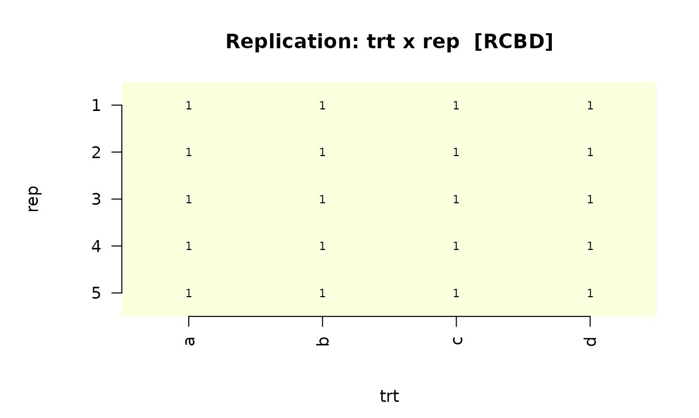
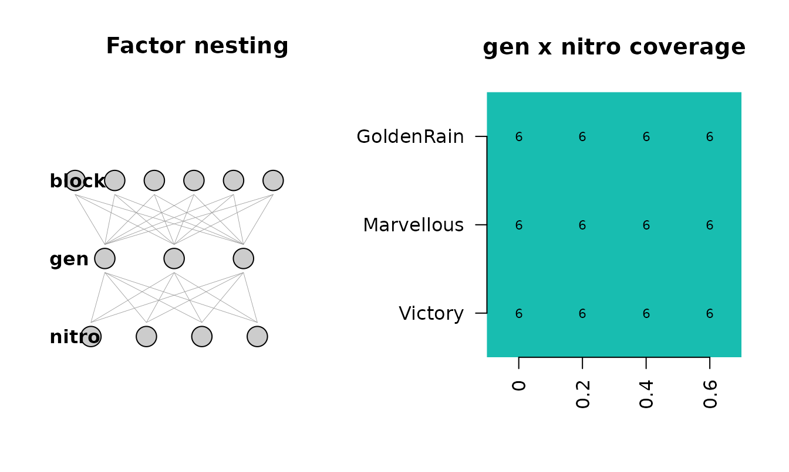

masque ships an experimental-design detector. Given a
tabular dataset, detect_design() returns the most likely
design class — CRD, RCBD,
IBD/alpha-lattice, row-column,
split-plot, factorial, or none —
with the per-rule evidence behind that choice.
The detector is read-only. It does not mutate df, does
not change mask() behaviour, and never auto-corrects
anything. It recommends a role assignment that the user can accept,
edit, or ignore.
Why bother? Two reasons. First, structural
awareness: roles inferred purely from column names miss
treatments that lack a ^trt-style name (for example the
gen column in an alpha-lattice). Second, sanity
validation: a one-line plot() shows whether what
you think is the design is what’s actually in the data — a class of bug
field statisticians have lived with for decades.
The verb in one line
ds <- detect_design(iris)
ds
#> ── design_summary <CRD> ───────────────────────────────────────────────────────
#> • Treatment: Species
#> ── Alternates (top rule scores) ────────────────────────────────────────────────
#> x <CRD > score = 1.00
#> <RCBD > score = 0.00
#> <IBD/alpha-lattice > score = 0.00
#> ── Recommended role hints ──────────────────────────────────────────────────────
#> = Species -> treatment
#> ℹ Use `plot(x)` for a sanity-check visualisation; pass to `propose_roles(df, detect = TRUE)` to seed role hints.The print method shows the picked class (CRD), the
working treatment (Species), and the top three alternates
so you can see how confident the call was. The full per-rule score is in
ds@scores:
sort(ds@scores, decreasing = TRUE)
#> CRD RCBD IBD/alpha-lattice row-column
#> 1 0 0 0
#> split-plot factorial
#> 0 0ds@recommended_roles is what gets overlaid on
propose_roles() when detection is on (the default since
0.3.0):
ds@recommended_roles
#> col role
#> 1 Species treatmentFour worked cases
CRD — Fisher’s iris
50 observations per species, no block, no spatial. Detection picks
Species as the working treatment.
plot(detect_design(iris), df = iris)The left panel is replication-per-treatment; the right is per-column
missingness (0 % in iris).
RCBD — synthetic randomised blocks
Five replicates of a 4-treatment design, every treatment in every block:
rcbd <- expand.grid(rep = 1:5, trt = factor(letters[1:4]))
rcbd$yield <- rnorm(nrow(rcbd))
ds_rcbd <- detect_design(rcbd)
ds_rcbd
#> ── design_summary <RCBD> ──────────────────────────────────────────────────────
#> • Treatment: trt
#> • Blocks: rep
#> ── Alternates (top rule scores) ────────────────────────────────────────────────
#> x <RCBD > score = 0.95
#> <CRD > score = 0.40
#> <IBD/alpha-lattice > score = 0.00
#> ── Recommended role hints ──────────────────────────────────────────────────────
#> = trt -> treatment
#> = rep -> design
#> ℹ Use `plot(x)` for a sanity-check visualisation; pass to `propose_roles(df, detect = TRUE)` to seed role hints.
plot(ds_rcbd, df = rcbd)
The replication tile shows trt x rep; every cell has
count 1 — the defining RCBD signature.
Split-plot — agridat::yates.oats
The classic 1935 split-plot oat trial: six blocks, three nitrogen levels (whole-plot), three genotypes (sub-plot).
if (has_agridat) {
oats <- agridat::yates.oats
ds_oats <- detect_design(oats)
ds_oats
plot(ds_oats, df = oats)
}
Caveat: the detector cannot fully distinguish a true split-plot from
a factorial-in-blocks, because both have the same data layout. The
whole-plot / sub-plot assignment uses cardinality (fewer levels =
whole-plot), which is a heuristic, not a guarantee. If you know which
factor was actually randomised at the whole-plot level, override
ds@whole_plot_col / ds@sub_plot_col
manually.
Observational — mtcars
mtcars has no design at all. Every rule scores below the
0.5 threshold; the verdict is "none".
ds_mt <- detect_design(mtcars)
ds_mt
#> ── design_summary <none> ──────────────────────────────────────────────────────
#> ℹ No experimental design detected above threshold.
#> • Top rule scores all below 0.5. Treat as observational.
#> ── Alternates (top rule scores) ────────────────────────────────────────────────
#> <factorial > score = 0.46
#> <IBD/alpha-lattice > score = 0.30
#> <CRD > score = 0.00
#> ℹ Use `plot(x)` for a sanity-check visualisation; pass to `propose_roles(df, detect = TRUE)` to seed role hints.
plot(ds_mt, df = mtcars)The plot now degrades gracefully: a fingerprint of treatment-frequency (empty here — there is no treatment factor) and the per-column NA pattern.
Integration with propose_roles()
propose_roles(df) runs detection by default and folds
the recommended roles into the returned tibble. The detected
design_summary is stashed as
attr(roles, "design") so you can plot() it
without re-running the detector:
if (has_agridat) {
roles <- propose_roles(agridat::john.alpha)
print(attr(roles, "design")@class_label)
print(roles[roles$role %in% c("treatment", "design"),
c("col", "role", "notes")])
}
#> [1] "IBD/alpha-lattice"
#> # A tibble: 6 × 3
#> col role notes
#> <chr> <chr> <chr>
#> 1 plot design Design-pattern name -> design (byte-identical).
#> 2 rep design Design-pattern name -> design (byte-identical).
#> 3 block design Design-pattern name -> design (byte-identical).
#> 4 gen treatment detect_design: covariate -> treatment (was: Default -> covari…
#> 5 row design Design-pattern name -> design (byte-identical).
#> 6 col design Design-pattern name -> design (byte-identical).Without detection (v0.2 behaviour), gen would have been
left as covariate because its column name does not match
any treatment regex. The structural detector promotes it.
Pass detect = FALSE to disable:
roles_v2 <- propose_roles(iris, detect = FALSE)
roles_v2$role[roles_v2$col == "Species"]
#> [1] "covariate"Caveats and limits
- Heuristic, not guarantee. The rule engine matches structural signatures; it does not know which factor was randomised at which level. Always treat the recommendation as a starting point.
- Split-plot vs factorial. Structurally identical when the whole-plot and sub-plot factors are both fully crossed within each block. The detector picks split-plot only when a design-named block factor is present and the smaller-cardinality candidate becomes the whole-plot.
-
Small fixtures. Detection of structure on fewer
than 20 rows is unreliable. When in doubt, pass
detect = FALSEand assign roles by hand. -
Optional interactive prompts. Pass
interactive = TRUEto be asked to disambiguate when the top-two rule scores are withintie_delta. By default the simpler design wins ties. -
Detection is read-only. It never changes
mask()synthesis behaviour. Onlypropose_roles()consumes its output, and only as role hints.